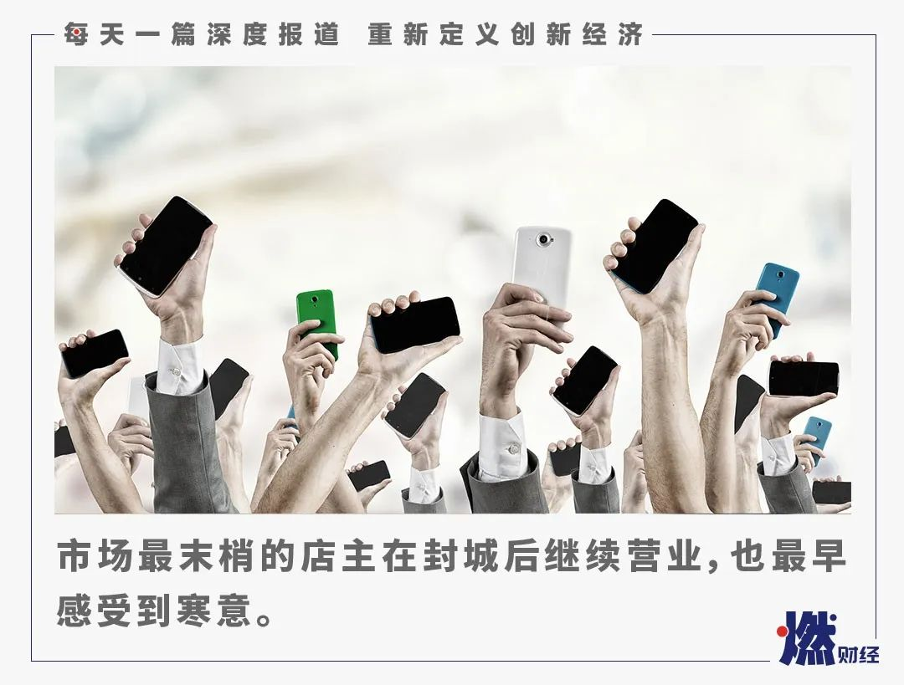
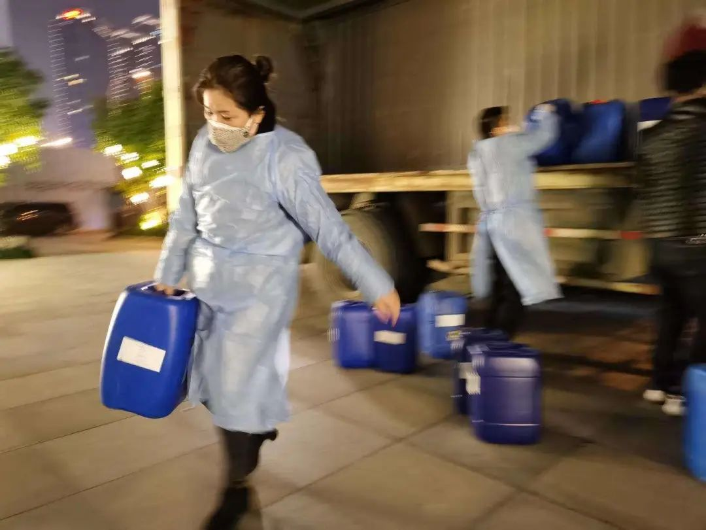
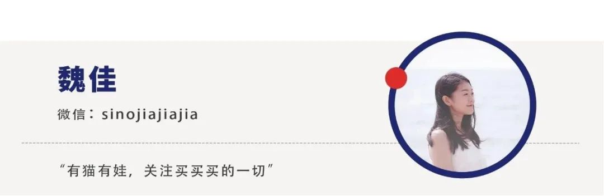

留守空剧院，我依旧等待《狮子王》到来
原文链接 备份链接 段心玫/华中科技大学新闻与信息传播学院 儿童眼科诊所的店长文子（化名）还记得，2019年的10月，自己曾在武汉琴台大剧院听了一场李云迪的音乐会，她很想念那段多姿多彩的时光（☞此前报道）。如今，大剧院与整个武汉一起，陷入 …

燃财经（ID:rancaijing）原创
作者 | 金玙璠
编辑 | 魏佳
眼下原本是手机行业传统的销售旺季，全国的渠道商、零售商年前备足了货，摩拳擦掌，就等着开工冲一把业绩，但一场疫情打懵了所有人。
来自天风证券的报告显示，2020年春节期间，中国市场手机出货同比降低50%-60%，导致目前手机库存水位已经达到了5000-6000万部的高线。
手机行业从本质来说也是零售业，面对疫情，大大小小的手机品牌专卖店不得不集体关店暂避风险。以苹果为例，截至2月29日，苹果在中国大陆的42家门店中只有八成复店。另一个影响手机销售的因素是物流。数据显示，主要快递企业整体复工率约为66.7%。
调研机构IDC预计，2020年一至二月的国内整体市场，将面临同比约40%的大幅下滑，而在三月内，如果疫情得到稳定控制，整体市场将会逐渐进入恢复期，但仍难以恢复至去年同期水平。整个第一季度，国内市场预计遭遇30%以上的同比下滑幅度。
这些变化的数字和背后造成的冲击，放在武汉这座城市都会被进一步放大。
1月24日，武汉“封城”后的第二天，武汉小米之家发布公告，特别提到，将暂停武汉地区的大家电配送和安装服务，武汉地区的小件商品的配送服务仍在继续。然而小米之家湖北地区负责人告诉燃财经，由于湖北情况特殊，目前武汉地区无法进行同城配送，且其他手机品牌也是类似的情况。多位手机品牌武汉代理商也向燃财经证实了这一消息。
武汉仿佛被“冻”住了，但是企业要复工，学生要复课，在家办公的职场人，网上上课的学生党，需要手机。各地驰援武汉的医疗队员，手机每天经历消毒流程，非常容易损坏，他们有大量的维修、换机需求。多位武汉市民告诉燃财经，尽管快递正在复工，但现实是电商平台纷纷显示武汉地区不发货。
市场最末梢的店主成了最后的救命稻草，燃财经采访了其中四位，有从手机促销员白手起家的校园网红，有为一线调运上千万防护物资的志愿者，有面向湖北省地县市的经销商，还有上个世纪就入行的运营商代理。
他们在武汉“封城”后继续营业，也最早感受到寒意，线下封店，现金流紧绷，年前的囤货都堆在仓库里，迟迟无法变现，只能苦等。
***手机再怎么发力也已经到瓶颈了***
***要布局智能家居***
任爱华 湖北爱华通讯创始人
我们是线下华为授权体验店，以零售为主，在武汉的20家直营店全部开在商场里。公司一直以线下为主，但疫情突发，也庆幸自己从一年多以前就开始养开发者团队，烧了很多钱，开发了自己的商城，客户在这次疫情期间都是从线上商城下单。我们最终是想把ERP财务系统、开单系统、会员系统全部打通，现在在不断优化中，目前还没完全上线。
过去一年公司销售额6个多亿，如果没有疫情，我相信一个月至少能卖1万多台，而这一个月大概只走了一千台左右。
真正感受到疫情来了，是“封城”前三天，我联系山东的朋友发10000只双国标KN95口罩到武汉，原本计划着给每位到店的顾客送只口罩。没想到武汉封城，物流出问题了，各路人马都开始找我买口罩，我得知武汉各个医院急缺医疗物资，当时决定全部捐给医院。
陆陆续续还是有很多人找我，那怎么办，我就到处去买。从1月21日到现在，我们自掏腰包买了100多万的防护物资，外地的朋友爱心捐赠的也有上千万。

任爱华在搬运84消毒水
来源/ 受访者提供
浙江台州的一个朋友说要捐一个亿，我告诉他，这里不缺钱，要捐就捐物资。他凑齐了10万只口罩、10吨84消毒水、1万个护目镜，当时是2月初，没有人敢来武汉，他拿出5万，请人把物资搬上车，半夜出发开往武汉。临出发前，司机师傅的孩子死活不同意：“非要去武汉，就从我身上轧过去”，只能再把所有物资卸下车 。三天后，我又求助其他朋友，才把这批物资运送到了武汉。
我和我爱人组建了一支志愿者团队，很多武汉企业家加入，这个团队就是在各地筹集医疗物资，再送到武汉的医院和社区去。
火神山、协和医院、同济医院、金银潭医院和各地的医疗队的工作人员，需要智慧大屏、平板电脑、手机、智能音响这些设备，只要我们有库存，都会第一时间送过去，方便医护人员接收数据。其中一部分是我们捐赠的，也有一些人支付了成本。
很多人建议我多宣传在一线的经历，门店所在的商场也在联系我，说只要讲出来，多少库存都不成问题，我都没有答应。
库存压力的确非常大，年前囤了5000万的库存，武汉人只能在家办公、在家上课，不能出去消费，我们就做社区团购和抖音直播，快递不能保证时效，小伙伴就送货上门。为了清库存，我们这一个月持续特价甩卖，赠品也多，送N95防护口罩、防护服。
团队里有些小伙伴就特别不理解，觉得“你又不赚钱，还让公司的人用生命冒险去送货”。外面的确很危险，我们团队有6个人这一个月一天都没有休息过，除了送防护物资，还要给客户送货，他们每个人在外奔波，我的心理压力都很大，但是我自己作为一个武汉人，真的想用这种方式为客户贡献一份力量。
疫情当下，坦白说，担心的首先是生存，而不是生意，我身边发生的苦难太多了，不被感染就是万幸，根本没有太多精力考虑企业的问题，唯一想的就是疫情赶快结束，让我们能够回归正常的生活，至于公司，等疫情过去，重头再来都可以。
 任爱华在搬运物资 来源 / 受访者提供
任爱华在搬运物资 来源 / 受访者提供
今年是我入行的第21年，从1999年卖BP机开始，到小灵通、2G、3G、4G转5G，每个时代都经历了。从2010年被朋友卷钱跑路以后，我就一心一意只做华为，当时有人说我是疯子，他们都做多品牌的时候，我就开始把华为引进武汉最高端的购物中心。
品牌艰难起步的时候，你没有陪着，它风生水起的时候，你又想分羹，那是不可能的。这一路走来，我的经验是，看准一个品牌，做专做精，而且不能只做手机了，手机再怎么发力，也已经到瓶颈了，未来还是要布局智能家居，这是一个尚待开发的市场。
***生意好的时候没时间收钱***
***现在都有时间搞维修了***
杜敏 手机经销商
我们门店在华中通讯广场开业14年了，以批发为主，主要面向湖北省地县市的经销商。走量主要以手机为主，其他的平板、笔记本也都卖，品牌以苹果和华为为主。
OPPO、vivo的区域保护制度极其严格，对每个经销商都是一样的要求，现在市面上能看到的专卖店都是按照官方指导价销售。卖华为是因为，这个品牌在湖北省内的货源比较好，虽然有区域保护限制，但是不影响我们卖到湖北省内。苹果的产品在全国各地哪里都可以走，没有任何限制。以前还会带一些小众的品牌，魅族、中兴、努比亚，后来十有八九亏钱，慢慢就不再进货了。
相对来说，手机行业价格透明，利润比较低，但是因为价格基数大，很容易被一些零售客户误解，增加了很多沟通成本。我们对经销商，利润就控制得更薄了，流通就需要更快，进一批货平均两天内就得卖出去，不然就要亏钱。
店里85%的生意是靠老客户，另外15%是陌生客户触店。从2018年开始，陌生客户越来越少，生意一年比一年难做，到去年已经减产到原来的1/5了。我下面的经销商的生意就更惨了，现在一半以上都转行了。
眼看着客户一天天在流失，只卖新机是生存不下去的，我从2018年开始卖二手手机，结果发现非常受欢迎，这个市场不像新机竞争那么激烈，而且有利润空间。生意最好的那些年，卖HTC和苹果手机第4代到第6代，每天收钱都收不过来，现在有的是时间倒腾二手手机，还有时间接换电池、换屏幕的维修生意。

图 /视觉中国
武汉封城这一个月，我们这些同行只能待在家里发发朋友圈，告诉别人“我还有货”，“可以同城配送”。现在武汉大部分人都是比较理智的，能不买的东西肯定不买，非买不可的东西才考虑买，虽然有老客户找我拿货，现在一天也就卖6-8台手机。下面地县市的经销商也求我发货，但货都封在店里拿不出来，而且物流不通，等我能给他们发货的时候，家里仅有的存货也早就卖完了。
现在武汉市手机的价位比平时略高，一是能流通的都是年前的囤货，进价本身不便宜，二是特殊时期，大家都有困难，稍微多挣点，一些急用的客户是可以接受的。因为武汉的学生都只能在线上课，而且大概率长期如此，家长认为手机对孩子眼睛不好，平板的需求就上来了，原来3000元的苹果iPad，现在价格涨到了3500元。不过手机行业和其他行业不同，武汉一旦全城解封，两三天以后，只要外省的货进来了，价格马上就回归正常了。
对于我们来说，谈挣钱是不可能的，只是勉强维持，而且生意是做一天少一天。现在有生意，是因为电商平台不往武汉发货，他们只能找信任的同城商家拿货，等到电商平台正常发货了，大多数人会放弃我们。再者，市场的店铺大概率不能开门营业，就算允许营业，可能只有手机维修的需求会在前几天井喷式的爆发，购机需求更是短暂。到时候，店里的库存终于能拿到了，客户也不在了。
*****现在只能不断接单*****
*****把家里的存货变现*****
小贝数码店店主
封城以后，我应该是还在武汉街头活跃的人之一，不是在送货，就是在寄同城快递的路上。
因为疫情，现在增加了设备租赁的业务。最早是因为我的一个老客户，他是一线医护人员，手机每天被消毒，进水了，联系我要维修。我想不能因为手机影响医护人员的工作，就把店里的展示机免费给他用，我们约定，等疫情结束，他再找我修手机。
后来各地的医疗救援队驰援武汉，我想他们人生地不熟，手机坏了没有地方修，也买不到新的，我就免费租设备给他们用。
我最早进入手机圈是因为HTC。2011年，我来武汉上学，大一那年一边读书，一边做HTC校园代理。当时一部分动力是赚点零花钱，更多的也是为了让别人肯定自己，尤其是女孩子，于是就混迹在论坛、微博、QQ空间，宣传自己。
那年有部电影叫《失恋33天》，它最火的时候，我在校园店里策划了“免费贴膜33天”活动，还被媒体采访了，当时没当回事，几天后手机信息都爆炸了，原来我被媒体报道成了大学生自食其力的典型。找我买手机的人越来越多，我也从兼职岗位升级成了HTC智能顾问。现在想想，当年早早就做了线上线下联动营销，把自己先打造成了校园“小网红”，再谈生意。
大三那年，听学长们说租房很辛苦，每次搬家都是一次血泪史，我就考虑在武汉买房，免得毕业以后再租。偶然的一次，我和一个同行去看房，最后他没买，我买了那栋楼的最大户型。那年我20岁，拿着家里支持的20万和自己攒的钱，完成了一笔一百万的交易，当然，也走上了还房贷之路。
我的手机生意从最开始租一节小柜台，到和别人合租管理一家店，最后开了自家风格的数码店，我才算真正意义上在武汉扎根。也是那段时间，因为骑电动车给客户送货感冒了好多次，于是去奥迪店买了A6L，那是人生第一台车。后来经常听小伙伴说起保时捷多牛，终于在去年圆了跑车梦。虽然新鲜劲过去了，这车基本都待在车库里，不过也算犒劳自己这么多年的辛苦吧。
我从校园手机起家，客户以学生为主，后来很多老客户参加了工作，又把我推荐给公司，企业级客户越来越多，比如斗鱼和一些地产公司，我就顺势在写字楼里开了第三家连锁直营店。想赚钱就要帮客户解决多样化的问题，采购年会产品，甚至酒水的需求我们都接。现在个人客户的需求也是多样的，虽然手机是看家产品，不过笔记本电脑、台式机、相机，甚至无人机、戴森系列产品，只要和科技数码生活相关的产品，我们都卖。
我2011年入行的时候，商场都是一铺难求，很多人涌进来。去年整个手机市场下滑得厉害，也不分淡季旺季了，月月都是淡季，同行有的倒闭，有的转行。因为我9年前就注重线上营销，各个门店也都有专属的客户群体，业务范围也广，我们八九成的订单都是线上找过来的，去年整体稳中有升。

来源 / 受访者提供
每年春节后的第一个月，是我们门店上半年最重要的一个月，学生开学，企业招新，往常都是大量采购新设备的需求等着我们，现在连想都不要想了。最发愁的是，年前的囤货都放在店铺拿不出来，还要支付车贷、房贷，现金流快扛不住了。
我们做生意的，最重要的不一定是赚钱，而是让现金流流动起来，所以现在只能不断接单，抓紧把家里的存货变现，手里没货了就从本地同行手里调货，成本高些也没办法，必须维持经营。

***我可能撑不到5G换机潮了***
***疫情之后考虑转行***
侯福安 中国移动代理商
我属于营业厅性质的代理商，在武汉的商铺都是临街的，从国包商、省包商手里拿货，主要依托于中国移动的补贴政策，比如充话费送手机、保底消费送手机等等。拿华为举例，如果华为某款机型入围到运营商库里，就可以参加这些活动。
入行之初，那时候在上个世纪，手机行业刚刚兴起，感觉自己进入了一个千年一遇的好产业，每天都是坐在店里等顾客。
但是随着运营商的市场空间不断被压缩，曾经对用户的优惠政策从2017年开始慢慢没有了，尤其是电商平台的崛起，包括跟进的各大品牌陆续自建了线上商城，对我们这种没有价格优势的店铺的冲击是致命的，我们必须出门找业务了，比如到社区做优惠活动。
其实我们门店已经很注重线上维护了，平时顾客来办业务、买手机，都会留存微信，平时也会维护。从2019年开始，我明显感觉到这个行业已经十分难做了，销售每年都下滑30%-50%。

图 / 视觉中国
年前，我拿出70万压货，谁知道武汉突然封城，门店封锁，存货拿不出来，少部分人通过微信联系我买手机，但是物流送不到，只能同城人肉送。去年这个时候一个月能出五六百台手机，封城以后，订单是个位数。
我个人认为，现在出趟门都是胆战心惊，即便疫情结束，武汉每个人内心都是有阴影的，大家还是觉得待在家里最安全，可能要到八九月份，出门消费的行为才会恢复，即便到了那时候，触店的人肯定是少之又少。今年只有线上生意可做，但是绝大部分像我们这样的商家既没有价格优势，又没有线上推销的客户基础。
我和几个同行对今年的市场判断都比较悲观，这次疫情会洗牌一大批中小规模的门店，反而只有夫妻店能存活下来。现在什么都做不了，只能等，我最近总盯着新闻，看有没有其他更好的路子，偶尔发朋友圈和老客户互动，但是效果和预期差得太远，如果有值得高兴的事，那就是房东主动打电话过来，要减免一些房租。
到今年，我从业20年了，经历过3G、4G换机潮，对5G的判断是，虽然国家支持，但是一年之内不可能有大规模的换机需求。我可能也撑不到下一次换机潮了，疫情之后，考虑转行。
*题图来源于视觉中国。




你近期有换机的打算吗？
欢迎在评论区留下你的评论。我们会在点赞前三（超过20个，统计周期为一周）的评论里挑选一位网友，送出腾讯视频季卡一张。原创文章转载请点击公众号菜单“转载合作”。
一手资讯/硬核报告/每日红包/线下活动！就差你了！快加微信rancaijing01回复“读者”一键上车！


原文链接 备份链接 段心玫/华中科技大学新闻与信息传播学院 儿童眼科诊所的店长文子（化名）还记得，2019年的10月，自己曾在武汉琴台大剧院听了一场李云迪的音乐会，她很想念那段多姿多彩的时光（☞此前报道）。如今，大剧院与整个武汉一起，陷入 …
原文链接 备份链接 全球70%的智能手机都在中国生产制造 隔离限制致工厂开工延误、劳动力供应短缺“虽然部分手机生产线已转移到越南、印度等国，但供应系统一直在中国。供应系统比组装线更有价值，要珍惜来之不易的供应链，尽快恢复，保持优势。” …
原文链接 备份链接 武汉封城以后，民间的心理咨询师就开始介入，为第一批被撤换下来的医护人员做心理疏导。2月初，各地的医疗救援队开始带上精神科医生。 汶川地震时，一线的医护人员15天左右要轮换，否则会引发严重的焦虑情绪。但这次，部分医护 …
原文链接 备份链接 新冠疫情是一场全球灾难，也是各国公共卫生的练兵场。 按照世界卫生组织专家、伦敦卫生和热带医学院流行病专家戴维 · 海曼（David Heymann）教授的观点，阻止新冠病毒传播的更重要的因素是一个国家医疗保健体系的实 …
原文链接 备份链接 非常时期，武汉成了全国人民挂念、祈福的城市。封城后，武汉人民的真实生活是什么样？随着抗“疫”有条不紊的进行，武汉发生了哪些变化？还存在哪些问题？ 正和岛自1月26日起特别推出“叶青专栏”。叶青是一位定居武汉40年的市 …